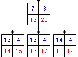
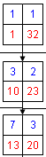
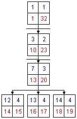

Сергей Томулевич
phoinix@asit.ru
О проблемах хранения деревьев в SQL базах данных вопрос можно не поднимать, просто сказать, что они есть.
Прежде всего посмотрим, как выглядят деревья Nested Sets, как они организованы и в чем удобство их использования.
На схеме представлено дерево, описанное по всем правилам метода "Вложенных множеств". Квадратами обозначены узлы дерева, синие цифры в верхнем правом и верхнем левом углах узла - уровень и уникальный идентификатор соответственно, а красные цифры в нижних углах - это левый и правый ключ. Именно в этих двух цифрах - левом и правом ключе заложена вся информация о дереве. И если информацию о ключах занести в базу данных, то работа с деревом намного упрощается. Обратите внимание на то, в каком порядке проставлены эти ключи. Если мысленно пройтись по порядку от 1 до 32, то вы обойдете все узлы дерева слева направо. Фактически это путь обхода всех узлов дерева слева направо.
При использовании такой структуры дерева каталогов, очень сильно упрощается выборка определенных элементов, таких как родительская ветка, подчиненные узлы, вообще вся "ветка" в которой участвует наш узел. В общем все гораздо проще увидеть на практике:
Создадим таблицу, где мы будем хранить наше дерево:
CREATE my_tree (
id INT(10) NOT NULL AUTO_INCREMENT,
name VARCHAR(150) NOT NULL,
left_key INT(10)
NOT NULL DEFAULT 0,
right_key INT(10) NOT NULL DEFAULT 0,
level INT(10) NOT NULL DEFAULT 0,
PRIMARY KEY id,
INDEX left_key (left_key, right_key, level)
)
Теперь определим, какие данные мы можем из неё (таблицы) выбрать:
1. Собственно само дерево:
SELECT id, name, level FROM my_tree ORDER BY left_key
В итоге, после небольшой обработки (в которой level играет роль множителя отступа), получим следующий список:
• Узел 1
• • Узел 2
• • • Узел 5
• • • • Узел 10
• • • • Узел 11
• • Узел 3
• • • Узел 6
• • • Узел 7
• • • • Узел 12
• • • • Узел 13
• • • • Узел 14
• • • Узел 8
• • Узел 4
• • • Узел 9
• • • • Узел 15
• • • • Узел 16
2. Выбор подчиненных узлов (за отправной узел возьмем "Узел 7" его ключи $left_key, $right_key и уровень $level)
SELECT id, name, level FROM my_tree WHERE left_key >= $left_key AND right_key <= $right_key ORDER BY left_key
В итоге получаем:
| • • • Узел 7 • • • • Узел 12 • • • • Узел 13 • • • • Узел 14 |
 |
3. Выбор родительской "ветки":
SELECT id, name, level FROM my_tree WHERE left_key <= $left_key AND right_key >= $right_key ORDER BY left_key
В итоге получаем:
| • Узел 1 • • Узел 3 • • • Узел 7 |
 |
4. Выбор ветки в которой участвует наш узел:
SELECT id, name, level FROM my_tree WHERE right_key > $left_key AND left_key < $right_key ORDER BY left_key
В итоге получаем:
| • Узел 1 • • Узел 3 • • • Узел 7 • • • • Узел 12 • • • • Узел 13 • • • • Узел 14 |
 |
В общем использование в условии запроса ключи узла можно выбрать любые данные связанные с этим узлом.
Единственным затруднением может возникнуть выборка родительского узла, чтобы его получить можно сделать запрос:
SELECT id, name, level FROM my_tree WHERE left_key <= $left_key AND right_key >= $right_key AND level = $level + 1 ORDER BY left_key
Правда, такой метод может показаться довольно громоздким, поэтому, для удобства, часто добавляют уще одно поле в таблицу - parent_id - в котором хранится идентификатор родительского узла.
Управление деревом каталогов
Прежде чем начинать управлять деревом, создадим проверку целостности
ключей, что бы линий раз не наступать на «грабли». Для этого определим
основные правила:
1. Левый ключ ВСЕГДА меньше правого;
2. Наименьший левый ключ ВСЕГДА равен 1;
3. Наибольший правый ключ ВСЕГДА равен двойному числу узлов;
4. Разница между правым и левым ключом ВСЕГДА нечетное число;
5. Если уровень узла нечетное число то тогда левый ключ ВСЕГДА нечетное число, то же самое и для четных чисел;
6. Ключи ВСЕГДА уникальны, вне зависимости от того правый он или левый;
Отсюда, создаем проверочные запросы :
1. SELECT id FROM my_tree WHERE left_key >= right_key
Если все правильно то результата работы запроса не будет, иначе, получаем список идентификаторов неправильных строк;
2 (3). SELECT COUNT(id), MIN(left_key), MAX(right_key) FROM my_tree
Получаем количество записей (узлов), минимальный левый ключ и максимальный правый ключ, проверяем значения.
4. SELECT id, MOD((right_key - left_key) / 2) AS ostatok FROM my_tree WHERE ostatok = 0
Если все правильно то результата работы запроса не будет, иначе, получаем список идентификаторов неправильных строк;
5. SELECT id, MOD((left_key – level + 2) / 2) AS ostatok FROM my_tree WHERE ostatok = 1
Если все правильно то результата работы запроса не будет, иначе, получаем список идентификаторов неправильных строк;
6. SELECT t1.id, COUNT(t1.id) AS rep, MAX(t3.right_key) AS max_right FROM my_tree AS t1, my_tree AS t2, my_tree AS t3 WHERE t1.left_key <> t2.left_key AND t1.left_key <> t2.right_key AND t1.right_key <> t2.left_key AND t1.right_key <> t2.right_key GROUP BY t1.id HAVING max_right <> SQRT(4 * rep + 1) + 1
Здесь, я думаю, потребуется некоторое пояснение запроса. Выборка по сути осуществляется из одной таблицы, но в разделе FROM эта таблица "виртуально" продублирована 3 раза: из первой мы выбираем все записи по порядку и начинаем сравнивать с записями второй таблицы (раздел WHERE) в результате мы получаем все записи неповторяющихся значений. Для того, что бы определить сколько раз запись не повторялась в таблице, производим группировку (раздел GROUP BY) и получаем число "не повторов" (COUNT(t1.id)). По условию, если все ключи уникальны, то число не повторов будет меньше на одну единицу чем общее количество записей. Для того, чтобы определить количество записей в таблице, берем максимальный правый ключ (MAX(t3.right_key)), так как его значение - двойное число записей, но так как в условии отбора для записи с максимальным правым ключом - максимальный правый ключ будет другим, вводится третья таблица, при этом число "неповторов" увеличивается умножением его на количество записей. SQRT(4*rep +1) - решение уравнения x^2 + x = rep. Если все правильно то результата работы запроса не будет, иначе, получаем список идентификаторов неправильных строк;
Примечание: Хотя данное тестирование не дает 100% гарантии, но определит большее количество ошибок.
Создание узла
Создание узла – самое простое действие над деревом. Для того, что бы его
осуществить нам потребуется уровень и правый ключ родительского узла
(узел в который добавляется новый), либо максимальный правый ключ, если у
нового узла не будет родительского.
Пусть $right_ key – правый ключ родительского узла, или максимальный правый ключ плюс единица (если родительского узла нет, то узел с максимальным правым ключом не будет обновляться, соответственно, чтобы не было повторов, берем число на единицу большее). $level – уровень родительского узла, либо 0, если родительского нет.
1. Обновляем ключи существующего дерева, узлы стоящие за родительским узлом:
UPDATE my_tree SET left_key = left_key + 2, right_ key = right_ key + 2 WHERE left_key > $right_ key
Но мы обновили только те узлы в которых изменяются оба ключа, при этом родительскую ветку (не узел, а все родительские узлы) мы не трогали, так как в них изменяется только правый ключ. Следует иметь в виду, что если у нас не будет родительского узла, то есть новый узел будет корневым, то данное обновление проводить нельзя.
2. Обновляем родительскую ветку:
UPDATE my_tree SET right_key = right_key + 2 WHERE right_key >= $right_key AND left_key < $right_key
3. Теперь добавляем новый узел :
INSERT INTO my_tree SET left_key = $right_key, right_key = $right_key + 1, level = $level + 1 [дополнительные параметры ]
4. Проверяем.
Теперь можно объединить первые два запроса в один, что бы не делать лишних действий.
UPDATE my_tree SET right_key = right_key + 2, left_key = IF(left_key > $right_key, left_key + 2, left_key) WHERE right_key >= $right_key
Удаление узла
Удаление узла не намного сложнее, но требуется учесть, что у удаляемого
узла могут быть подчиненные узлы. Для осуществления этого действия нам
потребуется левый и правый ключ удаляемого узла.
Пусть $left_key – левый ключ удаляемого узла, а $right_key – правый**
** Получить эти данные не сложно одним простейшим запросом.
1. Удаляем узел (ветку):
DELETE FROM my_tree WHERE left_key >= $left_key AND right_ key <= $right_key
2. Обновляем ключи оставшихся веток:
Как и в случае с добавлением обновление происходит двумя командами: обновление ключей родительской ветки и обновление ключей узлов, стоящих за родительской веткой. Следует правда учесть, что обновление будет производиться в другом порядке, так как ключи у нас уменьшаются.
2.1. Обновление родительской ветки :
UPDATE my_tree SET right_key = right_key – ($right_key - $left_key + 1)*** WHERE right_key > $right_key AND left_key < $left_key
*** Так как мы не знаем точное количество подчиненных узлов, мы вычисляем длину диапазона (смещения) ключей удаляемой ветки (узла).
2.2. Обновление последующих узлов :
UPDATE my_tree SET left_key = left_key – ($right_key - $left_key + 1), right_key = right_key – ($right_key - $left_key + 1) WHERE left_key > $right_key
3. Проверяем.
Теперь можно объединить последние два запроса в один, что бы не делать лишних действий.
UPDATE my_tree SET left_key = IF(left_key > $left_key, left_key – ($right_key - $left_key + 1), left_key), right_key = right_key – ($right_key - $left_key + 1) WHERE right_key > $right_key
Перемещение узла
Перемещение узла – самое сложное действие в управлении деревом. На схеме
показаны области, на которые можно разделить наше дерево. Из её можно
увидеть, что узел может перемещаться только в две разные области:
вышестоящих и нижестоящих узлов. Вообще, чем примечательно использование
Nested Set, что с помощью двух ключей ветки возможен выбор узлов любой
области.
1. Вверх по дереву (в область вышестоящих узлов), включает в себя:
- Перенос ветки (узла) в подчинение нижестоящему по дереву узлу;
- Перенос ветки (узла) вверх без изменения родительского узла (изменение порядка узлов);
2. Вниз по дереву (в область нижестоящих узлов), включает в себя.
- Перенос ветки в «корень» дерева (учитывая, что переносимая ветка будет последней по порядку);
- Перенос ветки (узла) вниз без изменения родительского узла (изменение порядка узлов);
- Поднятие узла (ветки) на уровень выше;
- Перемещение ветки вниз по дереву:
Для начала выберем ключи следующих узлов:
1. Ключи и уровень перемещаемого узла;
SELECT level, left_key, right_key FROM my_tree WHERE id = $id
Получаем $level, $left_key, $right_key
2. Уровень нового родительского узла (если узел перемещается в "корень" то сразу можно подставить значение 0):
SELECT level FROM my_tree WHERE id = $id_up
Получаем $level_up
3. Правый ключ узла за который мы вставляем узел (ветку):
Данный параметр, а не ключи нового родительского узла, выбираем по одной простой причине: Для обычного перемещения этого ключа нам будет достаточно, а при изменении порядка узлов и переноса в "корень" дерева данный параметр нам просто необходим.
Данная переменная берется в зависимости от действия:
- При простом перемещении в другой узел;
SELECT (right_key – 1) AS right_key FROM my_tree WHERE id = [id нового родительского узла]
- При изменении порядка, когда родительский узел не меняется – правый ключ узла за которым будет стоять перемещаемый;
SELECT left_key, right_key FROM my_tree WHERE id = [id соседнего узла с который будет(!) выше (левее)]****
**** Следует обратить внимание, что при поднятии узла вверх по порядку, узел выбирается не соседний, а следующий, за неимением оного (перемещаемый узел будет первым) берется левый ключ родительского узла
- При переносе узла в корень дерева – максимальный правый ключ ветки;
SELECT MAX(right_key) FROM my_tree
- При поднятии узла на уровень выше – правый ключ старого родительского узла
SELECT right_key FROM my_tree WHERE level = $level
Получаем $right_key_near и $left_key_near (для варианта изменения порядка)
4. Определяем смещения:
- $level_up - $level + 1 = $skew_level - смещение уровня изменяемого узла;
- $right_key - $left_key + 1 = $skew_tree - смещение ключей дерева;
Выбираем все узлы перемещаемой ветки:
SELECT id FROM my_tree WHERE left_key >= $left_key AND right_key <= $right_key
Получаем $id_edit - список id номеров перемещаемой ветки.
Так же требуется определить: в какую область перемещается узел, для этого сравниваем $right_key и $right_key_near, если $right_key_near больше, то узел перемещается в облась вышестоящих узлов, иначе - нижестоящих (почему существует разделение описано ниже).
Где у нас изменяются ключи по дереву во время переноса узла показано на схеме:
Как видно из схемы правые ключи меняются только у левой родительской ветки, левые ключи меняются у правой родительской ветки а оба ключа меняются в узлах находящихся между родительской старой и родительской новой веткой, области изменений, не меняются в зависимости от того, в какую (вышестоящую или нижестоящую) область перемещается узел. Отличием является, то что при перемещении в вышестоящую область ключи увеличиваются, а при переходе в нижестоящую - уменьшаются.
Хочу обратить внимание на то что у нас есть разница изменения ключей дерева в зависимости от того, в какую область перемещается узел (увеличение <-> уменьшение), а так же то, что правая родительская ветка может быть как старой, так и новой родительской веткой, то же самое и с левой родительской веткой. Поэтому порядок обновления ключей и условия выбора диапазонов областей различны, в зависимости от вида перемещения (вверх или вниз).
Возможно обновление ключей в три этапа: каждая ветка отдельно и диапазон между ними. Но так как мы меняем только два ключа, причем изменение на одно и то же число, то можно обойтись и двумя командами (UPDATE).
При перемещении вверх по дереву выделяем следующие области:
- Для левого ключа:
- левый ключ узла меньше $left_key
- левый ключ узла больше $right_key_near
- Для правого ключа:
- правый ключ узла меньше $left_key
- правый ключ узла больше $right_key_near
Хотел бы обратить внимание на то, что в условии с $right_key_near и $left_key дерево разделяется на разные области так как эти переменные сравниваются с разными ключами.
Определяем смещение ключей редактируемого узла $right_key_near - $left_key + 1 = $skew_edit;
Так как при в условиях не участвуют ключи кроме изменяемых, то порядок действий не имеет значения.
1. UPDATE my_tree SET right_key = right_key + $skew_tree WHERE right_key < $left_key AND right_key > $right_key_near
2. UPDATE my_tree SET left_key = left_key + $skew_tree WHERE left_key < $left_key AND left_key > $right_key_near
Теперь можно переместить ветку:
UPDATE my_tree SET left_key = left_key + $skew_edit, right_key = right_key + $skew_edit, level = level + $skew_level WHERE id IN ($id_edit)
После оптимизации этих запросов получаем всего один:
UPDATE my_table
SET right_key = IF(left_key >= $left_key, right_key + $skew_edit, IF(right_key < $left_key, right_key + $skew_tree, right_key)),
level = IF(left_key >= $left_key, level + $skew_level, level),
left_key = IF(left_key >= $left_key, left_key + $skew_edit, IF(left_key > $right_key_near, left_key + $skew_tree, left_key))
WHERE right_key > $right_key_near AND left_key < $right_key
В данной команде особое внимание нужно уделить порядку изменения полей таблицы, самым последним полем должно изменяться поле левого ключа (left_key), так как его значение является условием для изменения других полей.
Замечу, что при использовании этой команды, выбирать узлы перемещаемой ветки не нужно.
При перемещении вниз по дереву выделяем следующие области:
- Для левого ключа:
- левый ключ узла больше $right_key
- левый ключ узла меньше $right_key_near
- Для правого ключа:
- правый ключ узла больше $right_key
- правый ключ узла меньше или равно $right_key_near
Опять же порядок не имеет значения, поэтому просто делаем команды на обновление. Правда хочу обратить внимание на тот факт, что в условии: "левый ключ узла меньше $right_key_near" узел в котором находится $right_key_near тоже попадает в диапазон изменения, следует иметь ввиду, что при сравнении не однотипных ключей (правый <-> левый) текущий узел попадает или не попадает в диапазон без использования равенства в условии.
Определяем смещение ключей редактируемого узла $right_key_near - $left_key + 1 - $skew_tree = $skew_edit.
1. UPDATE my_tree SET right_key = right_key - $skew_tree WHERE right_key > $right_key AND right_key <= $right_key_near
2. UPDATE my_tree SET left_key = left_key - $skew_tree WHERE left_key < $left_key AND left_key > $right_key_near
Теперь можно переместить ветку:
UPDATE my_tree SET left_key = left_key + $skew_edit, right_key = right_key + $skew_edit, level = level + $skew_level WHERE id IN ($id_edit)
После оптимизации этих запросов получаем всего один:
UPDATE my_table
SET left_key = IF(right_key <= $right_key, left_key + $skew_edit, IF(left_key > $right_key, left_key - $skew_tree, left_key)),
level = IF(right_key <= $right_key, level + $skew_level, level),
right_key = IF(right_key <= $right_key, right_key + $skew_edit, IF(right_key <= $right_key_near, right_key - $skew_tree, right_key))
WHERE right_key > $left_key AND left_key <= $right_key_near
Замечания те же, что и при перемещении ветки вверх по дереву.
На этом в общем-то все, в итоге получаем только четыре основных действия, основную сложность составляет подготовка переменных к перемещению узла.